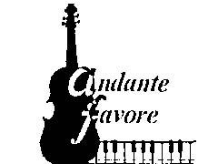

| Werk | Componist/ Bewerking | Duur | |
| Intrede: | Sarabande | G.F. Haendel | dwarsluit+strijkers+clavecimbel |
| Offerande: | Siciliano (fluitsonate nr 2 BWV1031) | J.S. Bach | strijkers+clavecimbel |
| Prelude (Suite Antique) | John Rutter | dwarsfluit+strijkers | |
| Abide with me | W.H. Monk / G. De Bruyker | strijkers | |
| Communie: | Aria (Suite Antique) | John Rutter | dwarsfluit+strijkers |
| Uittrede: | Watchman’s song | E. Grieg/ G. De Bruyker | strijkers |
| Oblivion (Henry IV) | A. Piazzolla | klarinet+piano+strijkers |